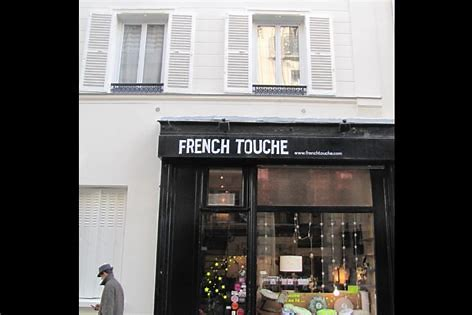

Paris is a city known for its fashion, elegance, and unique style. The city's boutiques perfectly reflect this spirit, offering an unforgettable shopping experience. The streets of Paris are full of fashion boutiques, jewelry stores, home decor shops, perfumeries, and much more. Parisian boutiques stand out for their atmosphere, careful decoration, and selection of high-quality products, ranging from luxury brands to more affordable shops. Each boutique in Paris has its own style and charm, providing a unique shopping experience for all tastes and budgets. Whether you're looking for trendy clothes, quality beauty products, or unique accessories, Parisian boutiques are a true shopping paradise for fashion lovers..
Accueil| La French Touche |
|  |
| French Touche is a charming boutique located in the heart of Paris, offering a unique selection of handmade accessories and jewelry. From delicate necklaces to elegant scarves, their products are the perfect combination of French style and quality craftsmanship. Each piece is carefully curated to reflect the latest fashion trends while maintaining a timeless elegance. French Touche is a must-visit for anyone looking to add a touch of Parisian chic to their wardrobe. |
| Ami Paris |
| Ami Paris is a stylish boutique located in the heart of the French capital, offering a unique range of men's and women's fashion. With a focus on contemporary design and high-quality materials, Ami Paris is the go-to destination for fashion-forward individuals looking for sophisticated yet effortless clothing. Their collections feature clean lines, minimalistic details, and understated elegance, making them perfect for any occasion. From sleek leather jackets to tailored suits, Ami Paris has something for everyone looking for a touch of Parisian chic. |
| La Grande Epicerie de Paris |
| La Grande Epicerie de Paris is a gourmet food store located in the heart of Paris, offering an exclusive selection of high-quality products from around the world. From artisanal cheeses to rare chocolates, their products are carefully curated to satisfy even the most discerning taste buds. Their in-store bakery produces fresh bread and pastries daily, while their wine cellar boasts an impressive selection of fine wines and spirits. With a focus on quality and excellence, La Grande Epicerie de Paris is a must-visit destination for anyone looking to indulge in the best that French gastronomy has to offer. |
| Shakespeare and company |
| Shakespeare and Company is a legendary bookstore located in the heart of Paris, offering a unique selection of books in English and French. Founded in 1951, the store has a rich history and has played a significant role in the literary scene of Paris. It has been a gathering place for writers and readers from around the world, hosting literary events and workshops. The store is home to over 70,000 titles, including rare and out-of-print books, making it a haven for book lovers and collectors. With its cozy atmosphere and rich literary heritage, Shakespeare and Company is a must-visit for anyone looking to immerse themselves in the world of books. |
| BHV Marais |
| BHV Marais is a renowned department store located in the heart of Paris, offering an extensive range of fashion, beauty, and home goods. Founded in 1856, the store has a rich history and has been a fixture in the Parisian shopping scene for over 160 years. BHV Marais is known for its curated selection of products from both established and emerging brands, making it a go-to destination for fashion-forward individuals. Their home goods department boasts an impressive selection of furniture, decor, and kitchenware, while their beauty section features high-end cosmetics and skincare. With its elegant architecture and extensive selection of products, BHV Marais is a must-visit for anyone looking to experience the best of Parisian shopping. |